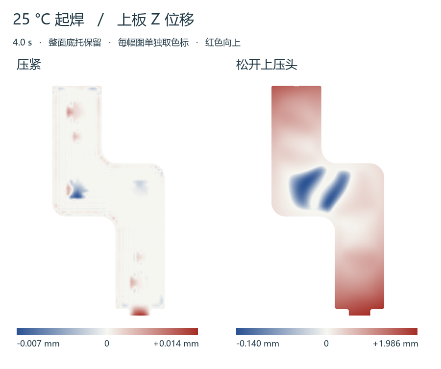

<!doctype html>
<html lang="zh-CN">
<meta charset="utf-8"><meta name="viewport" content="width=device-width,initial-scale=1">
<title>C0004 双板封边焊 · SIMUWELD SD</title>
<style>
*{box-sizing:border-box}body{margin:0;color:#172d32;background:#f2f4f0;font:15px/1.6 Inter,"Microsoft YaHei",sans-serif}
header{background:#183536;color:white;padding:14px max(5vw,20px);display:flex;align-items:center;gap:22px;border-bottom:3px solid #e1a265}
header strong{letter-spacing:.12em;font-size:14px}header span{border-left:1px solid #63817e;padding-left:20px;color:#d6e5df}
main{max-width:1340px;padding:30px 4vw;margin:auto}h1{font-size:clamp(26px,3vw,44px);letter-spacing:-.05em;margin:0}h1 small{font:500 .45em monospace;color:#54736f;letter-spacing:0;margin-right:16px}
.meta{color:#536868;margin:4px 0 24px}.layout{display:grid;grid-template-columns:minmax(0,1fr) 280px;gap:20px;align-items:start}
article,aside{background:white;border:1px solid #d6dfd9;border-radius:12px}nav{display:flex;gap:4px;flex-wrap:wrap;padding:12px;border-bottom:1px solid #dce4df}
button{border:0;background:transparent;color:#445a58;cursor:pointer;font:inherit;border-radius:6px;padding:6px 14px}button[aria-pressed=true]{background:#215951;color:white}button:hover{box-shadow:inset 0 0 0 1px #6b918b}
figure{margin:12px;text-align:center}img{max-width:100%;height:auto;max-height:64vh;object-fit:contain}figcaption{text-align:left;color:#475e5b;border-top:1px solid #e0e7e3;padding:11px 8px 0}
aside{padding:20px}h2{font-size:17px;margin:0 0 14px}dl{margin:0}dt{color:#536865}dd{margin:0 0 12px;font:500 34px/1.35 ui-monospace,monospace;color:#174f48}dd small{font:14px Inter,sans-serif}
aside p{border-top:1px solid #e0e7e3;padding-top:12px;color:#465d5a}a{color:#175f56}button:focus-visible,a:focus-visible{outline:3px solid #cf823e}
@media(max-width:840px){.layout{grid-template-columns:1fr}main{padding:18px 12px}img{max-height:none}nav{gap:0}button{padding:6px 9px}}
</style>
<header><strong>SIMUWELD SD</strong><span>固有应变法</span></header>
<main><h1><small>C0004</small>双板封边焊</h1>
<p class="meta">C19000 · 25 °C 起焊 · 4 段焊路 · 4.0 s 松夹 · 整面底托保留</p>
<div class="layout"><article><nav aria-label="结果视图">
<button aria-pressed="true" data-img="upper.png" data-text="压紧与松夹各用独立色标，红色向上，蓝色向下。">上板位移</button>
<button aria-pressed="false" data-img="plates.png" data-text="上板与底板的 Z 位移共用色标，可直接比较幅值。">双板位移</button>
<button aria-pressed="false" data-img="section.png" data-text="以横截面两侧焊路的连线为零，读取板面相对这条线的鼓高。">鼓包截面</button>
<button aria-pressed="false" data-img="thermal.gif" data-text="圆圈标出激光位置。每个位置显示该时刻厚度五层中的最高温。">温度历程</button>
</nav><figure><a id="original" href="upper.png" target="_blank" rel="noopener"></a><figcaption id="caption" aria-live="polite">压紧与松夹各用独立色标，红色向上，蓝色向下。</figcaption></figure></article>
<aside><h2>松夹后的板形</h2><dl><dt>上板端部翘起</dt><dd>1.986 <small>mm</small></dd><dt>底板端部翘起</dt><dd>2.167 <small>mm</small></dd><dt>上板局部鼓高</dt><dd>0.097 <small>mm</small></dd></dl>
<p>结构网格 1.0 mm。改用 1.6 mm 网格时，局部鼓高为 0.052 mm。该工况尚无 Simufact 对照。</p>
<p>热网格 0.2–1.6 mm，每板五层。焊点峰温超过材料表上限 2000 °C。</p><a href="results.json" download>下载计算摘要 ↓</a></aside></div></main>
<script>
const buttons=document.querySelectorAll('nav button');
for(const button of buttons) button.addEventListener('click',()=>{
  for(const item of buttons)item.setAttribute('aria-pressed',String(item===button));
  const field=document.querySelector('#field');
  field.src=button.dataset.img;
  field.alt=button.textContent;
  document.querySelector('#original').href=button.dataset.img;
  document.querySelector('#caption').textContent=button.dataset.text;
});
</script></html>
